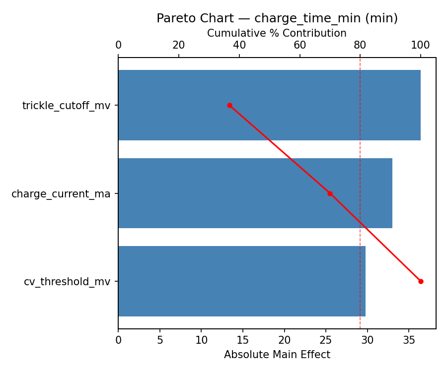
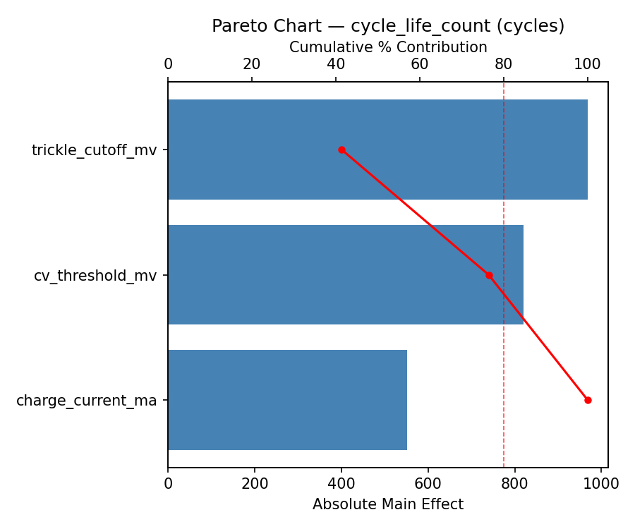
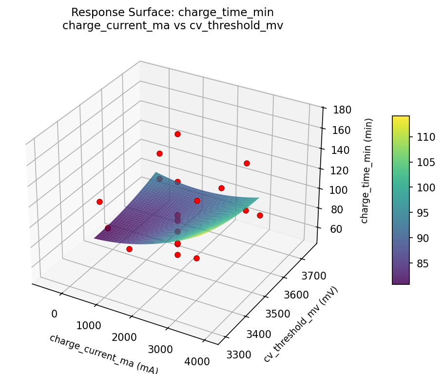
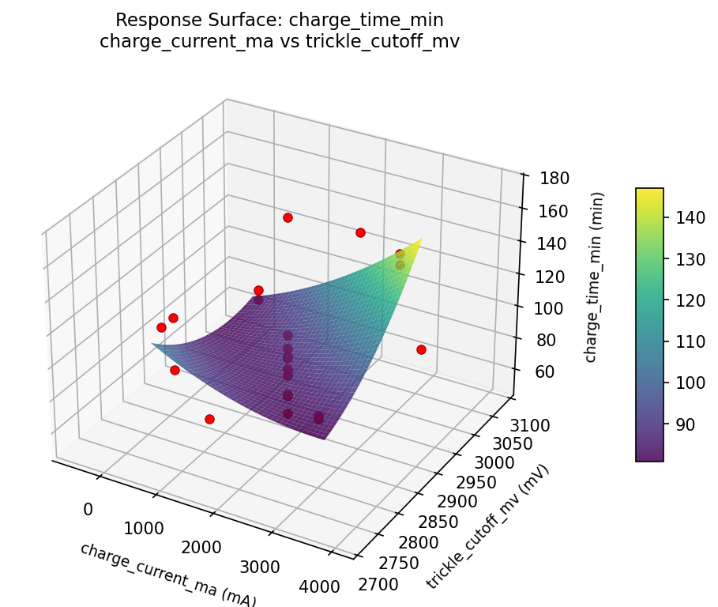
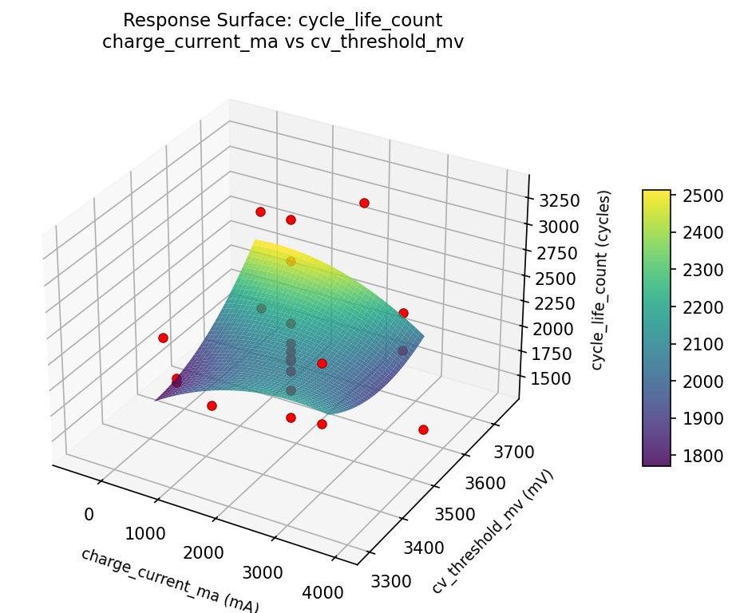
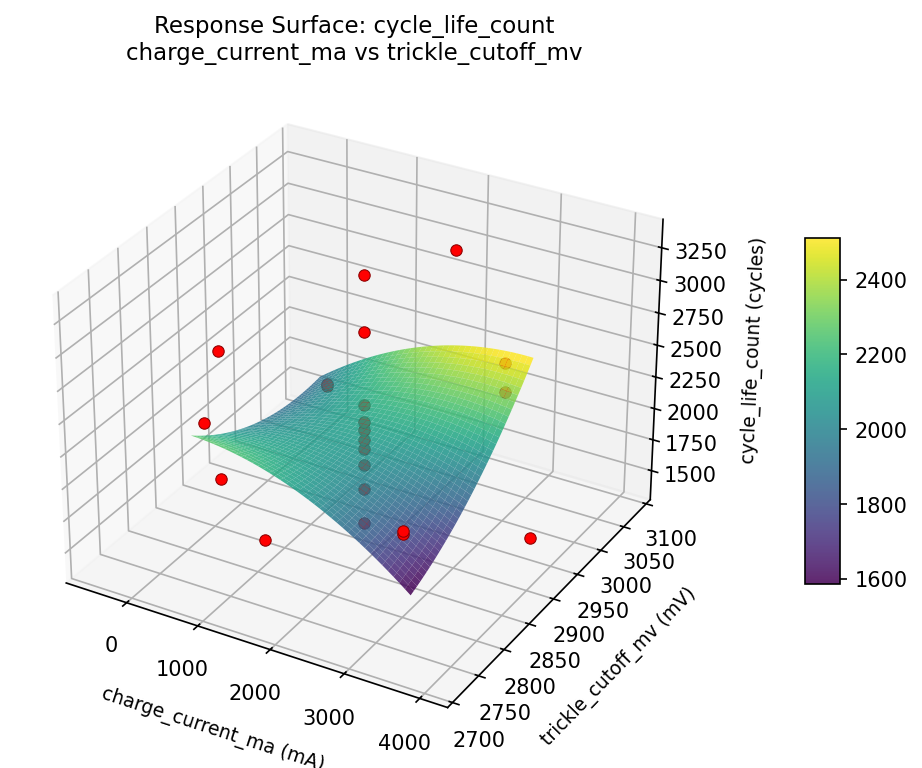
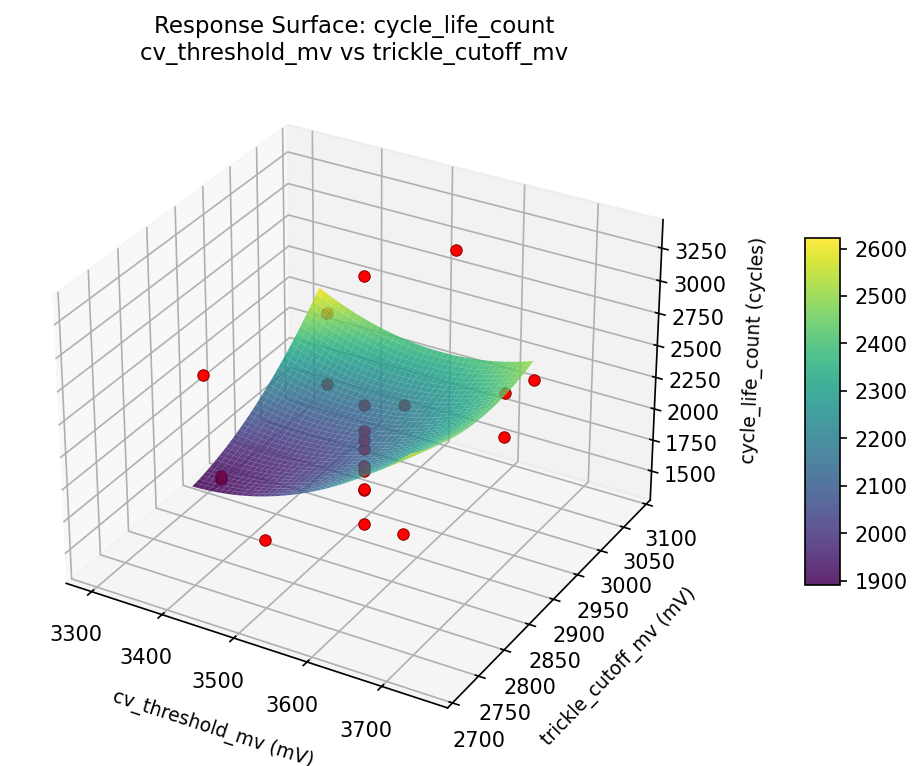

Summary
This experiment investigates battery management charging. Central Composite design to optimize charge current, CV threshold, and trickle cutoff for charge time and cycle life.
The design varies 3 factors: charge current ma (mA), ranging from 500 to 3000, cv threshold mv (mV), ranging from 3400 to 3650, and trickle cutoff mv (mV), ranging from 2800 to 3000. The goal is to optimize 2 responses: charge time min (min) (minimize) and cycle life count (cycles) (maximize). Fixed conditions held constant across all runs include chemistry = lifepo4, cell count = 4s.
A Central Composite Design (CCD) was selected to fit a full quadratic response surface model, including curvature and interaction effects. With 3 factors this produces 22 runs including center points and axial (star) points that extend beyond the factorial range.
Quadratic response surface models were fitted to capture potential curvature and factor interactions. The RSM contour plots below visualize how pairs of factors jointly affect each response.
Key Findings
For charge time min, the most influential factors were charge current ma (57.1%), trickle cutoff mv (23.1%), cv threshold mv (19.7%). The best observed value was 52.0 (at charge current ma = 1750, cv threshold mv = 3525, trickle cutoff mv = 2900).
For cycle life count, the most influential factors were charge current ma (72.1%), cv threshold mv (14.6%), trickle cutoff mv (13.3%). The best observed value was 3325.0 (at charge current ma = 3000, cv threshold mv = 3650, trickle cutoff mv = 2800).
Recommended Next Steps
- Run confirmation experiments at the predicted optimal settings to validate the model.
- Consider whether any fixed factors should be varied in a future study.
Experimental Setup
Factors
| Factor | Low | High | Unit |
|---|
charge_current_ma | 500 | 3000 | mA |
cv_threshold_mv | 3400 | 3650 | mV |
trickle_cutoff_mv | 2800 | 3000 | mV |
Fixed: chemistry = lifepo4, cell_count = 4s
Responses
| Response | Direction | Unit |
|---|
charge_time_min | ↓ minimize | min |
cycle_life_count | ↑ maximize | cycles |
Configuration
{
"metadata": {
"name": "Battery Management Charging",
"description": "Central Composite design to optimize charge current, CV threshold, and trickle cutoff for charge time and cycle life"
},
"factors": [
{
"name": "charge_current_ma",
"levels": [
"500",
"3000"
],
"type": "continuous",
"unit": "mA"
},
{
"name": "cv_threshold_mv",
"levels": [
"3400",
"3650"
],
"type": "continuous",
"unit": "mV"
},
{
"name": "trickle_cutoff_mv",
"levels": [
"2800",
"3000"
],
"type": "continuous",
"unit": "mV"
}
],
"fixed_factors": {
"chemistry": "lifepo4",
"cell_count": "4s"
},
"responses": [
{
"name": "charge_time_min",
"optimize": "minimize",
"unit": "min"
},
{
"name": "cycle_life_count",
"optimize": "maximize",
"unit": "cycles"
}
],
"settings": {
"operation": "central_composite",
"test_script": "use_cases/76_battery_management_charging/sim.sh"
}
}
Experimental Matrix
The Central Composite Design produces 22 runs. Each row is one experiment with specific factor settings.
| Run | charge_current_ma | cv_threshold_mv | trickle_cutoff_mv |
|---|
| 1 | 1750 | 3525 | 2900 |
| 2 | 3000 | 3400 | 3000 |
| 3 | 500 | 3650 | 2800 |
| 4 | 1750 | 3753.22 | 2900 |
| 5 | 1750 | 3525 | 2900 |
| 6 | -532.177 | 3525 | 2900 |
| 7 | 1750 | 3525 | 2717.43 |
| 8 | 1750 | 3525 | 2900 |
| 9 | 3000 | 3650 | 2800 |
| 10 | 4032.18 | 3525 | 2900 |
| 11 | 1750 | 3525 | 2900 |
| 12 | 1750 | 3296.78 | 2900 |
| 13 | 1750 | 3525 | 2900 |
| 14 | 500 | 3400 | 3000 |
| 15 | 1750 | 3525 | 2900 |
| 16 | 3000 | 3400 | 2800 |
| 17 | 1750 | 3525 | 3082.57 |
| 18 | 3000 | 3650 | 3000 |
| 19 | 1750 | 3525 | 2900 |
| 20 | 500 | 3400 | 2800 |
| 21 | 500 | 3650 | 3000 |
| 22 | 1750 | 3525 | 2900 |
Step-by-Step Workflow
1
Preview the design
$ python doe.py info --config use_cases/76_battery_management_charging/config.json
2
Generate the runner script
$ python doe.py generate --config use_cases/76_battery_management_charging/config.json \
--output use_cases/76_battery_management_charging/results/run.sh --seed 42
3
Execute the experiments
$ bash use_cases/76_battery_management_charging/results/run.sh
4
Analyze results
$ python doe.py analyze --config use_cases/76_battery_management_charging/config.json
5
Get optimization recommendations
$ python doe.py optimize --config use_cases/76_battery_management_charging/config.json
6
Generate the HTML report
$ python doe.py report --config use_cases/76_battery_management_charging/config.json \
--output use_cases/76_battery_management_charging/results/report.html
Features Exercised
| Feature | Value |
|---|
| Design type | central_composite |
| Factor types | continuous (all 3) |
| Arg style | double-dash |
| Responses | 2 (charge_time_min ↓, cycle_life_count ↑) |
| Total runs | 22 |
Analysis Results
Generated from actual experiment runs using the DOE Helper Tool.
Response: charge_time_min
Top factors: charge_current_ma (57.1%), trickle_cutoff_mv (23.1%), cv_threshold_mv (19.7%).
Pareto Chart

Main Effects Plot

Response: cycle_life_count
Top factors: charge_current_ma (72.1%), cv_threshold_mv (14.6%), trickle_cutoff_mv (13.3%).
Pareto Chart

Main Effects Plot

Response Surface Plots
3D surfaces fitted with quadratic RSM. Red dots are observed data points.
charge time min charge current ma vs cv threshold mv

charge time min charge current ma vs trickle cutoff mv

charge time min cv threshold mv vs trickle cutoff mv

cycle life count charge current ma vs cv threshold mv

cycle life count charge current ma vs trickle cutoff mv

cycle life count cv threshold mv vs trickle cutoff mv

Full Analysis Output
=== Main Effects: charge_time_min ===
Factor Effect Std Error % Contribution
--------------------------------------------------------------
charge_current_ma 50.0000 6.0013 57.1%
trickle_cutoff_mv 20.2500 6.0013 23.1%
cv_threshold_mv 17.2500 6.0013 19.7%
=== Summary Statistics: charge_time_min ===
charge_current_ma:
Level N Mean Std Min Max
------------------------------------------------------------
-532.177 1 126.0000 0.0000 126.0000 126.0000
1750 12 94.0833 30.3509 63.0000 172.0000
3000 4 88.7500 28.4766 52.0000 121.0000
4032.18 1 76.0000 0.0000 76.0000 76.0000
500 4 113.0000 21.5561 93.0000 142.0000
cv_threshold_mv:
Level N Mean Std Min Max
------------------------------------------------------------
3296.78 1 89.0000 0.0000 89.0000 89.0000
3400 4 106.2500 24.5136 87.0000 142.0000
3525 12 96.0833 32.1628 63.0000 172.0000
3650 4 95.5000 31.4590 52.0000 121.0000
3753.22 1 89.0000 0.0000 89.0000 89.0000
trickle_cutoff_mv:
Level N Mean Std Min Max
------------------------------------------------------------
2717.43 1 86.0000 0.0000 86.0000 86.0000
2800 4 106.2500 15.3921 87.0000 121.0000
2900 12 96.0833 32.1374 63.0000 172.0000
3000 4 95.5000 36.7922 52.0000 142.0000
3082.57 1 92.0000 0.0000 92.0000 92.0000
=== Main Effects: cycle_life_count ===
Factor Effect Std Error % Contribution
--------------------------------------------------------------
charge_current_ma 1533.0000 101.8941 72.1%
cv_threshold_mv 310.5833 101.8941 14.6%
trickle_cutoff_mv 282.4167 101.8941 13.3%
=== Summary Statistics: cycle_life_count ===
charge_current_ma:
Level N Mean Std Min Max
------------------------------------------------------------
-532.177 1 2937.0000 0.0000 2937.0000 2937.0000
1750 12 2187.5000 468.9864 1822.0000 3325.0000
3000 4 2164.7500 525.3598 1677.0000 2899.0000
4032.18 1 1404.0000 0.0000 1404.0000 1404.0000
500 4 2120.0000 346.6045 1685.0000 2521.0000
cv_threshold_mv:
Level N Mean Std Min Max
------------------------------------------------------------
3296.78 1 1956.0000 0.0000 1956.0000 1956.0000
3400 4 2086.2500 361.6917 1677.0000 2521.0000
3525 12 2226.5833 559.9853 1404.0000 3325.0000
3650 4 2198.5000 508.1847 1685.0000 2899.0000
3753.22 1 1916.0000 0.0000 1916.0000 1916.0000
trickle_cutoff_mv:
Level N Mean Std Min Max
------------------------------------------------------------
2717.43 1 1941.0000 0.0000 1941.0000 1941.0000
2800 4 2117.0000 577.3064 1677.0000 2899.0000
2900 12 2223.4167 561.7399 1404.0000 3325.0000
3000 4 2167.7500 249.9458 1940.0000 2521.0000
3082.57 1 1969.0000 0.0000 1969.0000 1969.0000
Optimization Recommendations
=== Optimization: charge_time_min ===
Direction: minimize
Best observed run: #16
charge_current_ma = 1750
cv_threshold_mv = 3525
trickle_cutoff_mv = 2900
Value: 52.0
RSM Model (linear, R² = 0.0553, Adj R² = -0.1022):
Coefficients:
intercept +97.1818
charge_current_ma +2.1767
cv_threshold_mv +4.5599
trickle_cutoff_mv -6.0952
RSM Model (quadratic, R² = 0.6093, Adj R² = 0.3162):
Coefficients:
intercept +80.1028
charge_current_ma +2.1767
cv_threshold_mv +4.5599
trickle_cutoff_mv -6.0952
charge_current_ma*cv_threshold_mv -8.7500
charge_current_ma*trickle_cutoff_mv -20.5000
cv_threshold_mv*trickle_cutoff_mv -7.0000
charge_current_ma^2 +13.5395
cv_threshold_mv^2 +8.7393
trickle_cutoff_mv^2 +3.3397
Curvature analysis:
charge_current_ma coef=+13.5395 convex (has a minimum)
cv_threshold_mv coef=+8.7393 convex (has a minimum)
trickle_cutoff_mv coef=+3.3397 convex (has a minimum)
Notable interactions:
charge_current_ma*trickle_cutoff_mv coef=-20.5000 (antagonistic)
charge_current_ma*cv_threshold_mv coef=-8.7500 (antagonistic)
cv_threshold_mv*trickle_cutoff_mv coef=-7.0000 (antagonistic)
Predicted optimum (from quadratic model):
charge_current_ma = 3000
cv_threshold_mv = 3650
trickle_cutoff_mv = 2800
Predicted value: 137.3030
Model quality: Moderate fit — use predictions directionally, not precisely.
Factor importance:
1. charge_current_ma (effect: 51.0, contribution: 37.6%)
2. trickle_cutoff_mv (effect: 44.8, contribution: 33.0%)
3. cv_threshold_mv (effect: 39.8, contribution: 29.4%)
=== Optimization: cycle_life_count ===
Direction: maximize
Best observed run: #6
charge_current_ma = 3000
cv_threshold_mv = 3650
trickle_cutoff_mv = 2800
Value: 3325.0
RSM Model (linear, R² = 0.3265, Adj R² = 0.2142):
Coefficients:
intercept +2169.5455
charge_current_ma -47.4229
cv_threshold_mv +162.3431
trickle_cutoff_mv -279.5808
RSM Model (quadratic, R² = 0.7518, Adj R² = 0.5657):
Coefficients:
intercept +1890.9122
charge_current_ma -47.4231
cv_threshold_mv +162.3431
trickle_cutoff_mv -279.5808
charge_current_ma*cv_threshold_mv -140.5000
charge_current_ma*trickle_cutoff_mv -219.2500
cv_threshold_mv*trickle_cutoff_mv -96.2500
charge_current_ma^2 +163.6642
cv_threshold_mv^2 +29.8627
trickle_cutoff_mv^2 +224.4273
Curvature analysis:
trickle_cutoff_mv coef=+224.4273 convex (has a minimum)
charge_current_ma coef=+163.6642 convex (has a minimum)
cv_threshold_mv coef=+29.8627 convex (has a minimum)
Notable interactions:
charge_current_ma*trickle_cutoff_mv coef=-219.2500 (antagonistic)
charge_current_ma*cv_threshold_mv coef=-140.5000 (antagonistic)
cv_threshold_mv*trickle_cutoff_mv coef=-96.2500 (antagonistic)
Predicted optimum (from quadratic model):
charge_current_ma = 1750
cv_threshold_mv = 3525
trickle_cutoff_mv = 2717.43
Predicted value: 3149.3995
Model quality: Good fit — general trends are captured, some noise remains.
Factor importance:
1. cv_threshold_mv (effect: 1024.5, contribution: 39.8%)
2. trickle_cutoff_mv (effect: 977.7, contribution: 37.9%)
3. charge_current_ma (effect: 574.4, contribution: 22.3%)